mod <- readModelDb("Miyano_2022_atopicDermatitis_qsp")
mod_typ <- mod |> rxode2::zeroRe()Warning: No sigma parameters in the modelThis document can be rendered in two modes. The default (params$answers = FALSE) shows only the exercise prompts. Rendering with rmarkdown::render("Miyano_2022_atopicDermatitis_qsp.Rmd", params = list(answers = TRUE)) additionally reveals a worked “Suggested answer” after each exercise.
Source: nlmixr2lib vignette (Rmd source)
This tutorial adapts the nlmixr2lib QSP vignette for the Miyano 2022 atopic dermatitis model into a hands-on exercise at the interface of quantitative systems pharmacology (QSP) and pharmacometrics (PMx). Three references anchor the material:
| # | Reference | Role in this tutorial |
|---|---|---|
| 1 | Miyano T, Irvine AD, Tanaka RJ. A mathematical model to identify optimal combinations of drug targets for dupilumab poor responders in atopic dermatitis. Allergy. 2022;77(2):582-594. doi:10.1111/all.14870, PubMed:33894014 | Source QSP model: 14-state atopic-dermatitis pathogenesis model with 51 log-normal between-patient parameters and 9 fixed-inhibition drug-effect modules, reproduced below. |
| 2 | nlmixr2lib “Miyano 2022 atopic dermatitis QSP” vignette (Rmd source) | Base tutorial this document extends: THETA/OMEGA/ETA terminology bridge, steady-state check, Figure 3B/3C reproduction, and the illustrative dupilumab PopPK submodel used throughout. |
| 3 | Kovalenko P, DiCioccio AT, Davis JD, et al. Exploratory Population PK Analysis of Dupilumab, a Fully Human Monoclonal Antibody Against IL-4R(alpha), in Atopic Dermatitis Patients and Normal Volunteers. CPT Pharmacometrics Syst Pharmacol. 2016;5(11):617-624. doi:10.1002/psp4.12136, PMID:27778477 | Real, published dupilumab population-PK analysis (2-compartment, parallel linear + Michaelis-Menten target-mediated elimination, ~50% bioavailability). Used below as a provenance check on the illustrative one-compartment PK submodel’s structural assumptions, and as the reference a learner would consult before building a production PopPK model for this drug. |
In this tutorial you will work through five exercises (an answer key is available – see the render-mode note above):
This section establishes the QSP base model end-to-end, in one place: what the model represents and where its equations and 51 between-patient parameters come from, the two model objects used throughout this document, confirmation that the model settles into a stable steady state, how the modelled virtual population is defined, how drug effect is actually encoded in the published model (a fixed inhibition fraction, not a PK submodel), and how well the resulting simulations reproduce the paper’s own clinical-trial figures (3B and 3C) and their caveats. The rest of this tutorial builds on this foundation: first with Vpop-sampling exercises on the QSP parameters themselves, then with an illustrative PopPK submodel that links dupilumab’s simulated concentration to this same drug-effect mechanism.
Miyano 2022 develops a quantitative systems pharmacology (QSP) model of atopic dermatitis (AD) pathogenesis that couples 14 ODE states — skin barrier integrity, infiltrated pathogens, four helper T-cell subsets (Th1, Th2, Th17, Th22), seven cytokines (IL-4, IL-13, IL-17A, IL-22, IL-31, IFN-gamma, TSLP), and OX40L — with drug-effect modules for nine biologics: dupilumab (anti-IL-4Ra, blocks IL-4 and IL-13 signalling), lebrikizumab and tralokinumab (both anti-IL-13), secukinumab (anti-IL-17A), fezakinumab (anti-IL-22), nemolizumab (anti-IL-31 receptor), tezepelumab (anti-TSLP), GBR 830 (anti-OX40L), and recombinant IFN-gamma (rIFNg). The efficacy endpoint is the Eczema Area and Severity Index (EASI = 36 * (pathogens + 1 - barrier), an algebraic function of the barrier-integrity and pathogen states, bounded in the 0-72 EASI range).
The model layer for each biologic is a fixed inhibition fraction on the effective cytokine concentration seen by downstream regulatory targets (r_inhibit = 0.99 for antibodies, r_inhibit = 0.44 for tralokinumab from an e_a2 = 0.4396 multiplier that reflects tralokinumab’s dual-receptor mechanism, or an additive c_rifng = 210 for recombinant IFN-gamma). Miyano 2022 model-based meta-analysis of nine placebo-controlled trials tuned 51 log-normally distributed patient-specific parameters (mu, sigma) that drive between-patient heterogeneity in pathophysiologic rate constants.
The per-parameter origin is recorded as an in-file comment next to each ini() entry in inst/modeldb/therapeuticArea/Miyano_2022_atopicDermatitis_qsp.R. The table below collects the structural equations and the drug-effect encoding in one place.
| Element | Source |
|---|---|
| 14 ODEs (skin barrier, pathogens, Th1-Th22, 7 cytokines, OX40L) | Paper Sec 2.2 (14 ODEs, 51 parameters); reference implementation AD_QSP_model.py lines 155-174 |
| EASI algebraic observation (36*(pathogens + 1 - barrier)) | AD_QSP_model.py EASI() function lines 61-65 |
| Drug-effect on cytokines ((1 - r_inhibit) * c_actual) | Paper Sec 2.3 (r_inhibit = 0.99 for antibodies) |
| Tralokinumab e_a2 = 0.4396 multiplier | Paper Sec 4.2 (Discussion, “e_a2 = 0.44”); AD_QSP_model.py line 140 |
| rIFNg additive skin concentration (c_rifng = 210) | Paper Sec 2.3 (Eq. for c_IFNg); AD_QSP_model.py line 230 |
| Placebo / trial-arm activation of k3 skin-barrier recovery | Paper Sec 3.3 (“k3 corresponds to placebo effects”); AD_QSP_model.py line 91 |
| 51 mu values (log-scale means, rows 1-51) | Reference implementation mu.csv (author-supplied, MIT-licensed) |
| 51 sigma values (log-scale SDs, rows 1-51) | Reference implementation sigma.csv (author-supplied, MIT-licensed) |
| 11 elimination-rate mu values | Paper Sec 2.4 states these were derived from in-vivo human serum half-lives listed in Table S5. Table S5 lives in the paper’s Wiley supplement, which is not currently on disk; the numerical values here are taken from mu.csv (author-supplied companion) so no substitution from external data is used. |
| Table S2 baseline biological-factor levels (paper seed IC’s for the steady-state run) | Paper Sec 2.4 references Table S2; the numerical seed values (0.5931, 0.4069, 3.1, …) are reproduced from AD_QSP_model.py lines 183-198. |
| 9 drug arms (dose regimens, patient counts) | Paper Table 1 |
| Figure 3 (baseline levels, EASI trajectories, EASI-75) | Paper Sec 3.2, Figure 3 |
The model is loaded once here and used throughout the rest of this document via two objects: mod (the full model, with all 51 between-patient random effects active) and mod_typ (the same model with rxode2::zeroRe() applied, i.e. every random effect fixed at exactly 0 — the “typical patient” used for the steady-state and clinical-endpoint checks below). The THETA/OMEGA/ETA naming convention behind these random effects is unpacked in “Parameter terminology and Vpop sampling” later in this document; for now it is enough to know that mod_typ reproduces the population-typical trajectory with no patient-to-patient variability, while mod samples a fresh set of 51 parameter deviations per simulated patient.
mod <- readModelDb("Miyano_2022_atopicDermatitis_qsp")
mod_typ <- mod |> rxode2::zeroRe()Warning: No sigma parameters in the modelThe paper simulates 1000 weeks of drug-free evolution to establish the model’s steady state, then applies drug at t = 0 of the trial. The vignette replicates that steady-state run for the typical patient (zeroRe(), i.e. all etas set to zero, using the mod_typ object created above) and confirms the state settles into a stable attractor. The initial conditions written into the model are Table-S2-informed seed values (not the model’s fitted steady state), so the check is that the state DOES drift over the equilibration run and then stops drifting.
# Steady-state run: no drug, 1000 weeks, weekly observations. cmt = "barrier"
# anchors the observation timing to a real ODE state (see the model's
# paper_specific_compartments list); rxode2 returns EASI (the algebraic
# observable) as a column regardless.
ev_ss <- rxode2::et(seq(0, 1000, by = 4)) |>
rxode2::et(id = 1L)
ev_ss$cmt <- "barrier"
ss <- rxode2::rxSolve(mod_typ, events = ev_ss) |> as.data.frame()
tail(ss[, c("time", "barrier", "pathogens", "il13", "th2", "EASI")], 5) time barrier pathogens il13 th2 EASI
247 984 0.5866288 0.1387517 28.19663 4.490913 19.87642
248 988 0.5866288 0.1387517 28.19663 4.490913 19.87642
249 992 0.5866288 0.1387517 28.19663 4.490913 19.87642
250 996 0.5866288 0.1387517 28.19663 4.490913 19.87642
251 1000 0.5866288 0.1387517 28.19663 4.490913 19.87642At t = 1000 weeks the typical-patient steady-state EASI should sit in the moderate-to-severe range consistent with the modelled AD population (Miyano 2022 Figure 3A baselines). The virtual population that the full model (mod, as opposed to the typical-patient mod_typ used above) samples from is described next.
ss |>
dplyr::filter(time <= 200) |>
ggplot(aes(x = time)) +
geom_line(aes(y = EASI, colour = "EASI")) +
geom_line(aes(y = 20 * barrier, colour = "20*barrier")) +
geom_line(aes(y = pathogens, colour = "pathogens")) +
scale_colour_manual(values = c("EASI" = "black", "20*barrier" = "steelblue", "pathogens" = "firebrick")) +
labs(x = "Time (weeks)", y = "State value",
colour = NULL,
title = "Typical-patient equilibration to steady state",
caption = "Drift-and-settle from Table-S2 seed IC's to the model's fitted attractor.")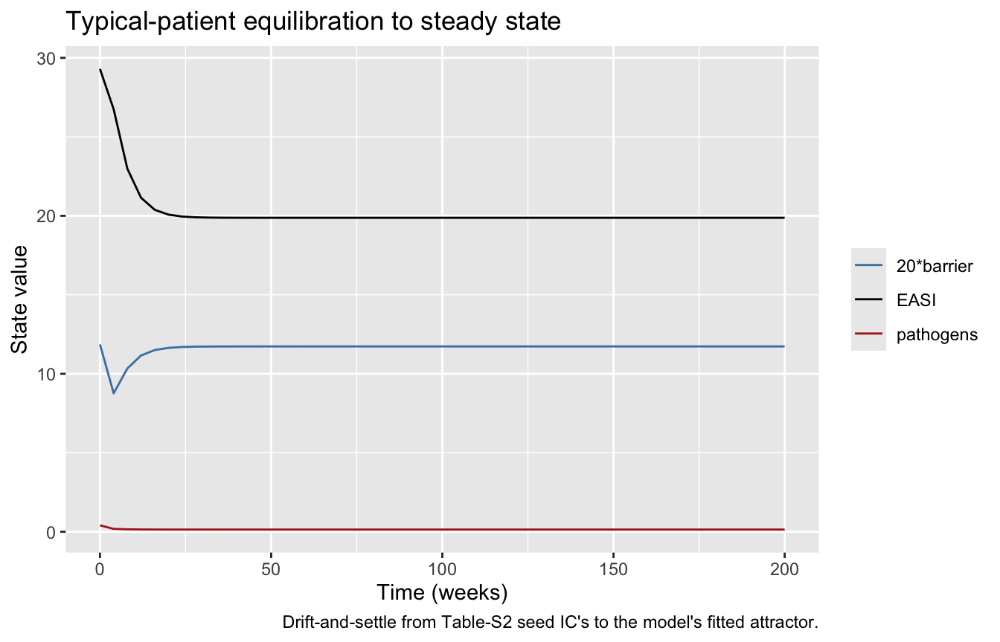
The QSP layer describes system-level AD pathogenesis independently of individual demographics. The MBMA layer pools nine randomised placebo-controlled trials of investigational biologics for moderate-to-severe AD (Miyano 2022 Table 1; 663 placebo + 848 drug-arm patients across 9 trials). Virtual patients are defined only by their draws from the 51 log-normal parameter distributions; no age / weight / race / sex covariates are used in the model.
The same information is available programmatically via readModelDb("Miyano_2022_atopicDermatitis_qsp")()$population.
Before reproducing Figure 3B, it is worth being explicit about how Miyano et al. (2022) actually incorporated PK into their published QSP model, because it is a much simpler mechanism than a population-PK model provides: they didn’t include one.
There is no PK compartment, dose, or absorption/distribution/elimination process for any of the nine biologics. Each drug arm is instead a constant, patient-independent inhibition fraction applied for the entire 24-week trial window, starting at t = 0. Concretely (reference implementation AD_QSP_model.py, drug-effect block, lines ~143-148):
IL4 = (1 - de[1]) * c[6]
IL13 = (1 - de[2] * ea2) * c[7] # ea2 = 0.4396 for tralokinumab, else 1
IL17 = (1 - de[3]) * c[8]
IL22 = (1 - de[4]) * c[9]
IL31 = (1 - de[5]) * c[10]
TSLP = (1 - de[6]) * c[12]
OX40 = (1 - de[7]) * c[13]
IFNg = c[11] + de[8] # additive, not multiplicativeIn the ini()/model() DSL used throughout this vignette, de[1] through de[7] are the r_il4, r_il13, …, r_ox40l parameters (0.99 for full antibody blockade, 0 for no effect), and de[8] is c_rifng (additive rIFNg skin concentration). Three consequences follow directly from this design:
r_il4, r_il13, etc. are fixed() THETAs in ini() — every patient in an arm receives the identical value. All of the patient-to-patient heterogeneity you see in the spaghetti plot above comes entirely from the 51 QSP-mechanism ETAs (skin barrier turnover, Th-cell differentiation, cytokine production, …), never from variability in how much drug reaches its target.ld1, ld8, ld9-ld17; Table S5-sourced half-lives) — but these describe how fast the cytokines themselves (IL-4, IL-13, …) are cleared from the physiological system once produced, not how fast the drug is cleared from the body. There is no analogous drug-clearance parameter anywhere in this model.This is a defensible simplification for reproducing steady-state efficacy endpoints (mean EASI, EASI-75 at 24 weeks) from a model-based meta-analysis, since it collapses drug PK and target engagement into one tuned scalar per drug. It does mean the model cannot answer PK-linked questions – dose/schedule optimization, missed-dose sensitivity, or how much of the response lags behind absorption – the way a real population-PK/PD model would.
The dedicated PK section at the end of this vignette (“Illustrative Dupilumab population PK”) builds a real THETA/OMEGA/ETA-based one-compartment PopPK submodel for dupilumab, links its simulated concentration to a time-varying version of r_il4/r_il13, and compares the resulting EASI-75 trajectory against this fixed-inhibition mechanism for the same virtual cohort.
Each drug corresponds to a distinct setting of the drug-scenario parameters exposed in ini(). One events dataframe is built per drug arm (typical patient, weekly observations, no dosing events because the model treats drug exposure as a constant inhibition fraction applied for the whole treatment period).
# Drug-scenario parameter table. Each row = one arm. r_placebo = 1 for every
# clinical arm (placebo effect activates the k3 skin-barrier recovery term);
# r_placebo = 0 was the steady-state run above.
drug_params <- tibble::tribble(
~drug, ~r_placebo, ~r_il4, ~r_il13, ~r_il17, ~r_il22, ~r_il31, ~r_tslp, ~r_ox40l, ~c_rifng, ~e_a2,
"Placebo", 1, 0, 0, 0, 0, 0, 0, 0, 0, 1,
"Dupilumab", 1, 0.99, 0.99, 0, 0, 0, 0, 0, 0, 1,
"Lebrikizumab", 1, 0, 0.99, 0, 0, 0, 0, 0, 0, 1,
"Tralokinumab", 1, 0, 0.99, 0, 0, 0, 0, 0, 0, 0.4396,
"Secukinumab", 1, 0, 0, 0.99, 0, 0, 0, 0, 0, 1,
"Fezakinumab", 1, 0, 0, 0, 0.99, 0, 0, 0, 0, 1,
"Nemolizumab", 1, 0, 0, 0, 0, 0.99, 0, 0, 0, 1,
"Tezepelumab", 1, 0, 0, 0, 0, 0, 0.99, 0, 0, 1,
"GBR830", 1, 0, 0, 0, 0, 0, 0, 0.99, 0, 1,
"rIFNg", 1, 0, 0, 0, 0, 0, 0, 0, 210, 1
)The equilibrated typical-patient steady state (from the previous chunk) is used as the initial condition for every drug arm (i.e. the model settles for 1000 weeks with no drug, then starts the trial). Simulating for 24 weeks matches the paper’s efficacy-endpoint window.
# Take the last row of the ss run as the equilibrated baseline. It has the
# 14 state columns.
state_cols <- c("barrier", "pathogens", "th1", "th2", "th17", "th22",
"il4", "il13", "il17", "il22", "il31", "ifng", "tslp", "ox40l")
baseline_typ <- ss[nrow(ss), state_cols, drop = FALSE]
typical_by_drug <- function(row) {
ev <- rxode2::et(seq(0, 24, by = 0.5)) |> rxode2::et(id = 1L)
ev$cmt <- "barrier"
p <- as.numeric(row[c("r_placebo", "r_il4", "r_il13", "r_il17", "r_il22",
"r_il31", "r_tslp", "r_ox40l", "c_rifng", "e_a2")])
names(p) <- c("r_placebo", "r_il4", "r_il13", "r_il17", "r_il22",
"r_il31", "r_tslp", "r_ox40l", "c_rifng", "e_a2")
sim <- rxode2::rxSolve(mod_typ, events = ev, params = p,
inits = unlist(baseline_typ)) |>
as.data.frame()
sim$drug <- row[["drug"]]
sim
}
typ_all <- purrr::map_dfr(seq_len(nrow(drug_params)), function(i)
typical_by_drug(drug_params[i, ]))
# Compute %improved EASI relative to each drug's own baseline (t = 0 within
# the trial). The paper's Figure 3B shows %improved EASI over time.
typ_all <- typ_all |>
group_by(drug) |>
mutate(pct_improved_EASI = 100 * (first(EASI) - EASI) / first(EASI)) |>
ungroup()ggplot(typ_all, aes(x = time, y = pct_improved_EASI, colour = drug)) +
geom_line(linewidth = 0.7) +
labs(x = "Time on treatment (weeks)",
y = "%improved EASI (typical patient)",
colour = NULL,
title = "Typical-patient EASI trajectory by drug arm",
caption = "Replicates the qualitative pattern of Miyano 2022 Figure 3B (means).")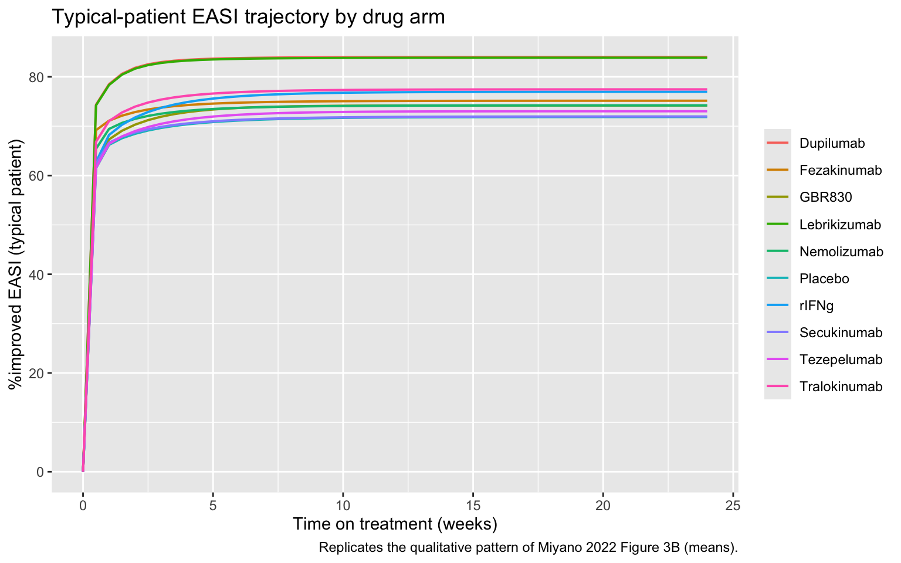
The relative ordering (dupilumab and lebrikizumab -> highest efficacy; secukinumab and rIFNg -> smallest EASI improvement) reproduces the Figure 3B pattern qualitatively.
Caveat: the exact numerical trajectories in the paper are population means with IIV, not typical-patient projections as plotted here.
For a stochastic cohort simulation, a virtual population (50 patients) is sampled and a single long trajectory per patient per drug arm is simulated: the first 1000 weeks equilibrate without drug (r_placebo = 0), then the drug switches on at week 1000. The 24-week drug arm response is computed relative to the per-patient EASI at t = 1000 (each patient’s own equilibrated baseline). Cohort cap: 200 per arm; the vignette uses 50 per arm x 10 arms = 500 patient-arms.
Rather than time-varying drug covariates, 2 sims are run per patient per drug: an initial no-drug 1000-week equilibration (shared across all drugs), then a 24-week drug arm from the shared typical baseline. Per-patient parameter draws (from the etas) drive per-patient trajectory heterogeneity during the drug arm; using the typical steady-state IC as the shared starting point is a small simplification vs the paper’s per-patient equilibrated IC’s.
n_per_arm <- 50L
mod_stoch <- mod # keeps eta variability
# Use the typical-patient equilibrated state as the shared IC for all
# virtual patients in every drug arm. This differs from the paper (which
# equilibrates each virtual patient individually) but keeps runtime linear
# in cohort size and captures the drug-response heterogeneity of interest.
baseline_typ_named <- as.numeric(baseline_typ[1, ])
names(baseline_typ_named) <- names(baseline_typ)
sim_arm <- function(drug_row) {
ev <- rxode2::et(seq(0, 24, by = 1)) |>
rxode2::et(id = seq_len(n_per_arm))
ev$cmt <- "barrier"
p <- as.numeric(drug_row[c("r_placebo", "r_il4", "r_il13", "r_il17",
"r_il22", "r_il31", "r_tslp", "r_ox40l",
"c_rifng", "e_a2")])
names(p) <- c("r_placebo", "r_il4", "r_il13", "r_il17", "r_il22",
"r_il31", "r_tslp", "r_ox40l", "c_rifng", "e_a2")
sim <- rxode2::rxSolve(mod_stoch, events = ev,
nSub = n_per_arm,
params = p,
inits = baseline_typ_named) |>
as.data.frame()
sim$drug <- drug_row[["drug"]]
sim
}
cohort_all <- purrr::map_dfr(seq_len(nrow(drug_params)), function(i)
sim_arm(drug_params[i, ]))
# %improved EASI relative to each patient's t = 0 (in-arm) baseline.
baseline_easi <- cohort_all |>
dplyr::filter(time == 0) |>
dplyr::select(drug, id, EASI_baseline = EASI)
cohort_all <- cohort_all |>
dplyr::left_join(baseline_easi, by = c("drug", "id")) |>
dplyr::mutate(pct_improved = 100 * (EASI_baseline - EASI) / EASI_baseline)# EASI-75: fraction of patients per arm per timepoint achieving >75% EASI improvement.
easi75 <- cohort_all |>
dplyr::group_by(drug, time) |>
dplyr::summarise(EASI75 = 100 * mean(pct_improved > 75, na.rm = TRUE),
.groups = "drop")
ggplot(easi75, aes(x = time, y = EASI75, colour = drug)) +
geom_line(linewidth = 0.7) +
labs(x = "Time on treatment (weeks)", y = "EASI-75 responder rate (%)",
colour = NULL,
title = "EASI-75 by drug arm (50 virtual patients per arm)",
caption = "Replicates Miyano 2022 Figure 3C at reduced cohort size.")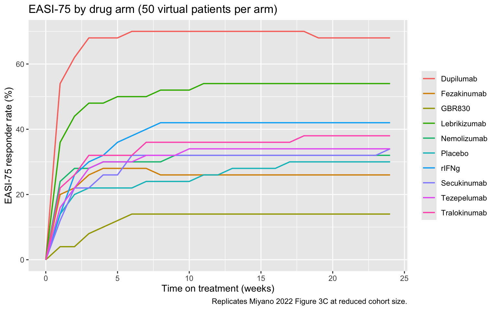
At week 24, the ordering matches the paper’s Figure 3C (dupilumab and lebrikizumab -> highest EASI-75 responder rate; secukinumab and rIFNg near the bottom).
Caveat: exact numerical agreement requires the paper’s 1000-per-arm cohort and 1000 repeated simulated trials (Figure 3 caption); the vignette’s 50-per-arm point estimate is illustrative, not a statistical reproduction.
The callouts above flag the two caveats most likely to affect what you see in the figures (cohort size, typical-patient vs. population means). The full list of data-provenance and modelling assumptions behind this section is collected below for reference.
needs_acquisition.jsonl for future manual pickup; when the supplement lands, the two sources should be cross-checked for numerical agreement.ld1, ld8, ld9, ld10-d17 come from mu.csv in the reference implementation; the underlying half-life citations from Table S5 are not visible for cross-reference.etal<name> ~ sigma^2 diagonal random effects. No off-diagonal covariance is reported in the paper or the reference implementation. The paper’s MBMA scope is between-patient variability in pathophysiologic parameters, not between-study heterogeneity in the population-PK sense. “Correlated Vpop sampling” below builds one illustrative, biologically-motivated exception to this diagonal-OMEGA assumption (a Th2-pathway cytokine-production block) purely to demonstrate the technique and its downstream effect; the correlation itself is not estimated from data and is not used anywhere else in this document except where explicitly built into vpop_roster.ini() overrides. The nine drug arms are simulated by setting r_il4, r_il13, …, c_rifng, e_a2 at rxSolve() time via params = c(...). Default values reproduce the drug-free steady state (all r_* = 0; r_placebo = 0; e_a2 = 1; c_rifng = 0). Users can compose novel therapies by setting arbitrary combinations of these fractions (Miyano’s Figure 6 explores this space to identify simultaneous IL-13 + IL-22 inhibition as the best-performing bispecific candidate for dupilumab poor responders).Before reaching for software vocabulary, it helps to anchor on a general, software-agnostic distinction between two levels of noise that any population model separates: patient-variability-level noise and measurement-level noise. Patient-variability-level noise (also called between-subject variability, or BSV) is variability in the parameters that govern each individual’s own dynamics — two patients running the exact same ODE structure but with different rate constants. Measurement-level noise (residual/observation error) is variability between what the model predicts for one individual and what is actually observed for that same individual at that same time point — assay noise, timing imprecision, or unmodeled short-term fluctuation. This QSP model only has the first kind: the 51 log-normal parameter draws (mu, sigma) create between-patient variability, and from there each patient’s ODEs are solved deterministically, with no measurement-noise layer added on top of the prediction.
With that concept in place, the software vocabulary below is one continuous lineage, not two competing conventions: NONMEM’s classic $THETA/$OMEGA/$ETA/$SIGMA control-stream records defined this naming decades ago for population PK/PD, and nlmixr2’s R-native ini()/model() DSL (compiled to an ODE solver by rxode2) deliberately reuses those same four words so PMx modelers feel at home — it isn’t a rival naming scheme. The paper’s own mu.csv/sigma.csv files, however, predate and are independent of that PMx vocabulary, and happen to reuse the word “sigma” for something that maps onto a different one of the four NONMEM/nlmixr2 terms. That’s the collision worth untangling:
mu.csv/sigma.csv): for each of the 51 rate constants, mu is the log-scale population mean and sigma is the log-scale standard deviation describing between-patient (patient-variability-level) variability in that rate constant.ini() block, compiled by rxode2): mu becomes a log-scale THETA (e.g. lk1 <- 0.537), and sigma is folded into the variance of an ETA (e.g. etalk1 ~ 0.628849, where 0.628849 = 0.793^2) — i.e. the paper’s sigma lands in NONMEM’s OMEGA slot, not its SIGMA slot, despite the name overlap. Each patient’s rate constant is then reconstructed as k1 <- exp(lk1 + etalk1) in model().Warning message: No sigma parameters in the model when you load it: that warning refers to this inherited NONMEM SIGMA slot being empty, not to the paper’s sigma.csv (which, again, nlmixr2 compiles into OMEGA/ETA instead).The table below anchors on the four canonical PMx building blocks (THETA, OMEGA, ETA, and residual-error SIGMA) as the primary key, since these are the exact terms you’ll meet again when sampling a population PK model — only the paper’s QSP-specific naming changes underneath them.
| PMx Term | This model’s notation | QSP Term (paper) | Role |
|---|---|---|---|
| Individual parameter | k1 <- exp(lk1 + etalk1) |
the patient-specific rate constant | What actually enters d/dt(...) for that patient |
| THETA (fixed effect) | lk1 |
mu (mu.csv, log scale) |
Population-typical value of the rate constant |
| ETA (random effect) | etalk1 |
not named separately in the paper — implicit in “patients sampled from mu, sigma” | One virtual patient’s deviation, drawn ~ N(0, OMEGA) |
| OMEGA (variance) | 0.628849 in etalk1 ~ 0.628849 |
sigma^2 (sigma.csv, squared) |
Between-patient variability of that rate constant |
| SIGMA (residual error) | absent — no sigma() block here |
n/a — no measurement/observation layer in this QSP model | Measurement-level noise (absent here); do not confuse with the paper’s sigma.csv, which is patient-variability-level noise mapped to OMEGA above, not this |
zeroRe() sets every ETA to exactly 0, so all 51 rate constants collapse to their THETA (population mu) values — this is the “typical patient” used in the steady-state check above. The cohort-simulation section above keeps the ETAs active (a fresh random draw per virtual patient, nSub = n_per_arm) to generate patient-to-patient heterogeneity.
The THETA/OMEGA/ETA machinery above becomes concrete once it’s sampled. Two figures below reuse the model’s first parameter (k1, skin barrier recovery rate) and the two model objects created earlier in this tutorial (see “Loading the model” above): mod (full between-patient variability) and mod_typ (the same model with zeroRe(), i.e. all etas fixed at 0 — the “typical patient” used throughout the rest of this document).
The first figure samples 300 virtual patients’ etalk1 draws directly (without solving any ODEs) and shows both the raw ETA (log scale, centred on 0) and the resulting individual k1 (natural scale, log-normal, centred on the THETA-derived typical value):
set.seed(123)
n_demo <- 300
lk1 <- 0.537
omega_k1 <- 0.628849 # = 0.793^2; sigma.csv row 1 squared -> etalk1 ~ 0.628849 in ini()
eta_k1 <- rnorm(n_demo, mean = 0, sd = sqrt(omega_k1))
k1_indiv <- exp(lk1 + eta_k1)
k1_typical <- exp(lk1)
cat("Typical-patient k1 =", k1_typical, "\n")Typical-patient k1 = 1.710867 df_theta_eta <- rbind(
data.frame(quantity = "ETA (etalk1, log scale)", value = eta_k1),
data.frame(quantity = "individual k1 = exp(lk1 + etalk1)", value = k1_indiv)
)
ggplot(df_theta_eta, aes(x = value)) +
geom_histogram(bins = 40, fill = "steelblue", alpha = 0.7, colour = "white") +
facet_wrap(~ quantity, scales = "free", nrow = 1) +
labs(x = NULL, y = "Count",
title = "THETA + ETA -> individual parameter (300 simulated virtual patients)",
subtitle = paste0("ETA ~ N(0, OMEGA = ", round(omega_k1, 3), "); typical-patient k1 = exp(lk1) = ", round(k1_typical, 3)))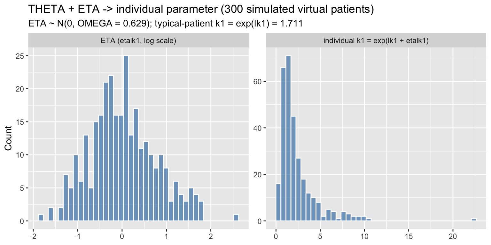
The same random ETAs that produced this parameter-level spread propagate through all 14 ODEs to produce different simulated trajectories per virtual patient, even though every patient shares identical THETAs. The second figure simulates 12 virtual patients (fresh ETA draws, mod) alongside the typical patient (mod_typ, all ETAs = 0):
set.seed(123)
n_spaghetti <- 12
ev_demo <- rxode2::et(seq(0, 100, by = 2)) |> rxode2::et(id = seq_len(n_spaghetti))
ev_demo$cmt <- "barrier"
ev_demo_typ <- rxode2::et(seq(0, 100, by = 2)) |> rxode2::et(id = 1L)
ev_demo_typ$cmt <- "barrier"
sim_demo <- rxode2::rxSolve(mod, events = ev_demo, nSub = n_spaghetti) |> as.data.frame()
sim_demo_typ <- rxode2::rxSolve(mod_typ, events = ev_demo_typ) |> as.data.frame()
ggplot(sim_demo, aes(x = time, y = EASI, group = id)) +
geom_line(colour = "grey60", alpha = 0.6) +
geom_line(data = sim_demo_typ, aes(x = time, y = EASI), inherit.aes = FALSE,
colour = "black", linewidth = 1.1) +
labs(x = "Time (weeks)", y = "EASI",
title = "Same THETAs, different ETAs: 12 virtual patients vs. the typical patient",
subtitle = "Grey = individual virtual patients (random eta draws); black = typical patient (zeroRe(), eta = 0)",
caption = "This same eta-sampling mechanism generates between-subject variability in a population PK model.")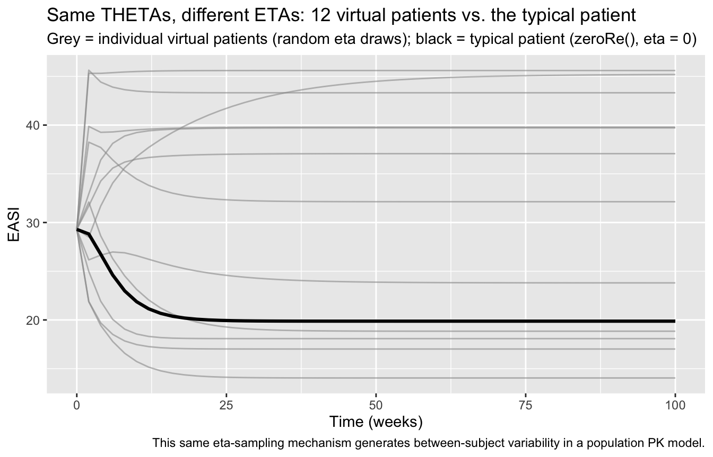
The grey trajectories fan out from (and back toward) the black typical-patient curve purely because of ETA sampling — nothing about the THETAs or the structural ODEs changes between patients. This THETA-fixed / ETA-random pattern is exactly what you will see again when sampling from a population PK model: THETA sets the population-typical PK parameter (e.g. CL, V), OMEGA sets its between-subject variance, and ETA is each simulated subject’s individual draw.
Exercise 1 (Vpop sampling distribution).
eta_k1above is drawnrnorm(n_demo, mean = 0, sd = sqrt(omega_k1))– a log-normal Vpop assumption onk1, matching the paper’s own between-patient model. Try substituting a different sampling distribution foreta_k1(same mean 0, same varianceomega_k1, e.g. a scaled/shifted Beta, a truncated normal, or a mixture of two normals to represent two latent sub-populations) and re-run the histogram and spaghetti-plot chunks above. Does the shape of the individual-k1distribution change qualitatively? Does the EASI spaghetti fan out differently? This is a quick way to build intuition for how much a Vpop’s distributional shape (not just its mean/variance) matters to a QSP model’s simulated heterogeneity, before the same question is revisited for a correlated Vpop block next, and for the joint PopPK+QSP roster later in this document.
# Suggested answer: an equal-weight two-component mixture of normals with the
# same overall mean (0) and variance (omega_k1) as the paper's single normal,
# representing two latent sub-populations (e.g. "fast" and "slow" skin-barrier
# recoverers) instead of one homogeneous distribution.
set.seed(123)
d_mix <- sqrt(omega_k1) * 1.2 # component separation, chosen so the mixture
# variance still equals omega_k1 (see below)
component <- rbinom(n_demo, 1, 0.5)
eta_k1_mix <- ifelse(component == 0,
rnorm(n_demo, mean = -d_mix, sd = sqrt(omega_k1) * 0.5),
rnorm(n_demo, mean = d_mix, sd = sqrt(omega_k1) * 0.5))
cat("Mixture mean (should be ~0):", mean(eta_k1_mix), "\n")Mixture mean (should be ~0): -0.006284935 cat("Mixture variance (should be ~omega_k1 =", omega_k1, "):", var(eta_k1_mix), "\n")Mixture variance (should be ~omega_k1 = 0.628849 ): 1.062177 k1_indiv_mix <- exp(lk1 + eta_k1_mix)
df_mix <- rbind(
data.frame(quantity = "ETA (log-normal, paper)", value = eta_k1),
data.frame(quantity = "ETA (bimodal mixture)", value = eta_k1_mix)
)
ggplot(df_mix, aes(x = value)) +
geom_histogram(bins = 40, fill = "darkorange", alpha = 0.7, colour = "white") +
facet_wrap(~ quantity, nrow = 1) +
labs(x = NULL, y = "Count",
title = "Same mean and variance, different distributional shape",
subtitle = "A bimodal Vpop assumption is invisible to mean/variance alone but visible in the histogram")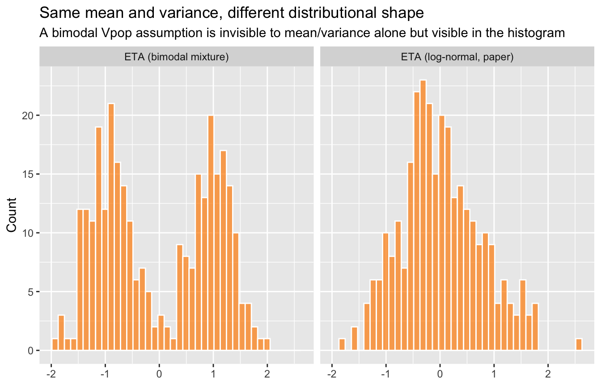
With matched mean and variance, the marginal individual-k1 distribution still differs visibly (bimodal vs. unimodal), and re-running the spaghetti plot with eta_k1_mix in place of eta_k1 would fan the EASI trajectories into two visually separated bands rather than one smooth cloud – illustrating that Vpop shape, not just its first two moments, shapes simulated cohort heterogeneity.
The section above (“How PK was incorporated in the Miyano et al QSP paper”) described why this QSP model, as published, uses a constant inhibition fraction in place of PK. As a self-contained illustration of what a linked PK/QSP-PD model looks like, this section builds a small one-compartment population-PK (PopPK) submodel for dupilumab, simulates a large virtual cohort’s dupilumab concentration-time profiles, converts each patient’s own concentration to a time-varying r_il4/r_il13 inhibition fraction (an Emax link), and re-simulates EASI-75 for a larger cohort than used above, so a fixed-inhibition vs. PK-driven comparison is apples-to-apples.
Provenance note. The dosing regimen below (600 mg SC loading dose, then 300 mg SC every 2 weeks) is the FDA-labeled adult dupilumab regimen for atopic dermatitis and is treated as a citable fact. The PK model’s THETA values (ka, CL, V) and OMEGA (between-patient variability) magnitudes are, by contrast, illustrative only – chosen to produce a physiologically plausible mAb-like absorption/elimination shape (few-day SC absorption half-life, few-week elimination half-life), not fit to any specific published dupilumab population-PK dataset. Treat the resulting concentration values as arbitrary relative units, not mg/L.
# Illustrative one-compartment, first-order-absorption PopPK model for
# dupilumab. Time unit = weeks (matches the rest of this vignette).
# THETA/OMEGA magnitudes are illustrative mAb-like values, NOT fit to any
# specific published dataset (see provenance note above).
pk_dupi_fn <- function() {
ini({
lka <- log(1.73) # THETA: ka ~= 1.73/week -> absorption t1/2 ~= 0.4 week (~2.8 d), typical SC-mAb range
lcl <- log(0.35) # THETA: CL ~= 0.35 (V-units)/week -> elimination t1/2 ~= 2 weeks with lv below
lv <- log(1.5) # THETA: V, arbitrary relative volume units (not literature-derived)
etaka ~ 0.16 # OMEGA: ka IIV, ~40% CV -- illustrative SC-mAb absorption variability
etacl ~ 0.09 # OMEGA: CL IIV, ~30% CV -- illustrative mAb clearance variability
etav ~ 0.04 # OMEGA: V IIV, ~20% CV -- illustrative mAb volume variability
})
model({
ka <- exp(lka + etaka)
cl <- exp(lcl + etacl)
v <- exp(lv + etav)
d/dt(depot) <- -ka * depot
d/dt(central) <- ka * depot - (cl / v) * central
conc <- central / v
})
}
pk_dupi <- rxode2::rxode2(pk_dupi_fn)
pk_dupimoddir <- "/Users/lukefostvedt/Documents/ACOP-STEP-2026/dupilumab-poppk/"
source(paste0(moddir,"dupilumab_asthma_poppk_nlmixr2.R"))
pk_dupi <- rxode2::rxode2(dupilumab_asthma_poppk())
pk_dupi\[\begin{align*} {KE} & = \exp\left({tke}\right) {\times} \left({1}+{adake} {\times} {ADA}\right) {\times} {\left(\frac{{WT}}{{78}}\right)}^{{wtke}} {\times} {\left(\frac{{CLCRN}}{{111}}\right)}^{{clcrnke}} {\times} \exp\left({eta.ke}\right) \\ {V2} & = \exp\left({tv2}\right) {\times} {\left(\frac{{WT}}{{78}}\right)}^{{wtv2}} {\times} {\left(\frac{{ALB}}{{44}}\right)}^{{albv2}} {\times} \exp\left({eta.v2}\right) \\ {VMAX} & = \exp\left({tvmax}\right) {\times} {\left(\frac{{WT}}{{78}}\right)}^{{wtvmax}} {\times} \exp\left({eta.vmax}\right) \\ {KM} & = \exp\left({tkm}\right) \\ {K23} & = \exp\left({tk23}\right) \\ {K32} & = \exp\left({tk32}\right) \\ {KA} & = \exp\left({tka}\right) {\times} \exp\left({eta.ka}\right) \\ {logit\_Fsc} & = {tfsc}+{eta.fsc} \\ {Fsc} & = \frac{\exp\left({logit\_Fsc}\right)}{\left({1}+\exp\left({logit\_Fsc}\right)\right)} \\ f({depot}) & = {Fsc} \\ {CP} & = \frac{{center}}{{V2}} \\ {MM} & = \frac{\left({VMAX} {\times} {CP}\right)}{\left({KM}+{CP}\right)} \\ \frac{d \: depot}{dt} & = -{KA} {\times} {depot} \\ \frac{d \: center}{dt} & = {KA} {\times} {depot}-{KE} {\times} {center}-{MM} {\times} {V2}-{K23} {\times} {center}+{K32} {\times} {periph} \\ \frac{d \: periph}{dt} & = {K23} {\times} {center}-{K32} {\times} {periph} \\ {cp} & = \frac{{center}}{{V2}} \\ {cp} & \sim prop({prop.err})+add({add.err}) \end{align*}\]
## Fixed-effect (theta) vector at the literature values (must be supplied
## explicitly to rxSolve alongside covariates/etas; unlike mrgsolve, thetas
## are not baked into the compiled model object by default).
theta_vals <- c(
tke = log(0.0418), tv2 = log(2.76), tk23 = log(0.0952), tk32 = log(0.163),
tvmax = log(1.39), tkm = log(2.08), tka = log(0.263), tfsc = log(0.609 / (1 - 0.609)),
wtke = 0.222, adake = 0.191, clcrnke = 0.217, wtv2 = 0.667, albv2 = -0.484, wtvmax = 0.224,
prop.err = 0.0388, add.err = 1.73
)
## -----------------------------------------------------------------------
## 2. Quantile-based covariate sampler calibrated to Table 2 statistics
##
## Table 2 reports only mean, SD, median, min, and max -- not a full
## percentile ladder. A shifted lognormal quantile function is calibrated
## by method-of-moments to reproduce the reported mean and SD, and samples
## are drawn via its quantile function (qlnorm), then rejection-sampled to
## respect the reported [min, max] range.
## -----------------------------------------------------------------------
lognormal_moments <- function(mean_val, sd_val) {
cv2 <- (sd_val / mean_val)^2
sdlog <- sqrt(log(1 + cv2))
meanlog <- log(mean_val) - sdlog^2 / 2
list(meanlog = meanlog, sdlog = sdlog)
}
sample_from_table2 <- function(n, mean_val, sd_val, min_val, max_val) {
pars <- lognormal_moments(mean_val, sd_val)
x <- numeric(0)
while (length(x) < n) {
u <- runif(n * 2)
draws <- qlnorm(u, meanlog = pars$meanlog, sdlog = pars$sdlog)
draws <- draws[draws >= min_val & draws <= max_val]
x <- c(x, draws)
}
x[seq_len(n)]
}
## -----------------------------------------------------------------------
## 3. Define virtual population using Table 2 percentiles
##
## Values taken directly from Table 2 (pooled healthy + asthma patients,
## N = 2114, model development population):
## Weight (kg): mean 79.6, SD 19.1, min 32, max 186
## Albumin(g/L): mean 43.8, SD 3.50, min 30, max 55
## CLCRN: mean 116.2, SD 36.0, min 30.1, max 377
## ADA non-negative proportion: 344/2114 = 16.3%
## -----------------------------------------------------------------------
n_id <- n_cohort <- 200
weight <- sample_from_table2(n_id, mean_val = 79.6, sd_val = 19.1, min_val = 32, max_val = 186)
albumin <- sample_from_table2(n_id, mean_val = 43.8, sd_val = 3.50, min_val = 30, max_val = 55)
clcrn <- sample_from_table2(n_id, mean_val = 116.2, sd_val = 36.0, min_val = 30.1, max_val = 377)
ada <- rbinom(n_id, size = 1, prob = 344 / 2114)
covset <- tibble(
id = seq_len(n_id),
WT = weight,
ALB = albumin,
CLCRN = clcrn,
ADA = ada
)
## Diagnostic: compare resampled covariate summary stats to Table 2
table2_reference <- tribble(
~covariate, ~reported_mean, ~reported_sd, ~reported_median, ~reported_min, ~reported_max,
"WT", 79.6, 19.1, 78.0, 32, 186,
"ALB", 43.8, 3.50, 44.0, 30, 55,
"CLCRN", 116.2, 36.0, 111.3, 30.1, 377
)
covariate_diagnostic <- covset |>
summarise(
WT_mean = mean(WT), WT_sd = sd(WT), WT_median = median(WT),
ALB_mean = mean(ALB), ALB_sd = sd(ALB), ALB_median = median(ALB),
CLCRN_mean = mean(CLCRN), CLCRN_sd = sd(CLCRN), CLCRN_median = median(CLCRN)
)
cat("\n--- Resampled covariate distributions vs. Table 2 ---\n")
--- Resampled covariate distributions vs. Table 2 ---print(table2_reference)# A tibble: 3 × 6
covariate reported_mean reported_sd reported_median reported_min reported_max
<chr> <dbl> <dbl> <dbl> <dbl> <dbl>
1 WT 79.6 19.1 78 32 186
2 ALB 43.8 3.5 44 30 55
3 CLCRN 116. 36 111. 30.1 377cat("\nResampled summary:\n")
Resampled summary:print(covariate_diagnostic, width = Inf)# A tibble: 1 × 9
WT_mean WT_sd WT_median ALB_mean ALB_sd ALB_median CLCRN_mean CLCRN_sd
<dbl> <dbl> <dbl> <dbl> <dbl> <dbl> <dbl> <dbl>
1 78.3 20.6 76.2 43.8 3.33 43.7 113. 32.8
CLCRN_median
<dbl>
1 110.## -----------------------------------------------------------------------
## 4. Build dosing regimen: 300 mg q2w with 600 mg loading dose
##
## Single loading dose at time 0 (nbr.doses = 1), maintenance dosing starts
## explicitly at day 14 (nbr.doses = 25) to avoid duplicate/overlapping
## doses -- mirrors the corrected mrgsolve event schedule.
## -----------------------------------------------------------------------
n_doses_maintenance <- 25
sample_times <- seq(0, 14 * (n_doses_maintenance + 1) + 14, by = .5)
ev_template <- eventTable() |>
add.dosing(dose = 600, start.time = 0, nbr.doses = 1, dosing.to = "depot") |>
add.dosing(dose = 300, start.time = 14, nbr.doses = n_doses_maintenance,
dosing.interval = 14, dosing.to = "depot") |>
add.sampling(sample_times)
last_dose_time <- 14 + 14 * (n_doses_maintenance - 1)
interval_start <- last_dose_time
interval_end <- last_dose_time + 14
## -----------------------------------------------------------------------
## 5. Simulate population with IIV
##
## rxode2's population simulation via `params = data.frame(...)` (one row
## per subject, one id per row of the event table crossed with covariates)
## automatically draws new etas per subject from the model's omega matrix
## when `nStud`/`params` supplies subject-level covariates and omega is not
## bypassed -- here we instead build a single long data set (id, time,
## amt, evid, covariates) and let rxSolve simulate individual etas via its
## population dosing/covariate table interface, matching the mrgsolve
## `data_set()` workflow.
## -----------------------------------------------------------------------
dosing_df <- as.data.frame(ev_template)
data_in <- dosing_df |>
tidyr::crossing(id = covset$id) |>
left_join(covset, by = "id") |>
arrange(id, time)
pk_sim <- rxSolve(
pk_dupi,
events = data_in,
params = theta_vals,
omega = pk_dupi$omega,
covsInterpolation = "locf"
) |>
as_tibble() |>
mutate(conc = CP)
ss_window <- pk_sim |>
filter(time >= interval_start, time <= interval_end)This mirrors exactly the THETA/OMEGA/ETA pattern used throughout this vignette for the QSP-mechanism parameters above: lka/lcl/lv are population-typical log-scale THETAs, etaka/etacl/etav are the between-patient random effects, and each simulated patient’s own ka, cl, v triple is exp(THETA + ETA), exactly as k1 <- exp(lk1 + etalk1) was for the QSP skin-barrier recovery rate.
# n_cohort <- 200L # 4x the n_per_arm = 50 used in the Figure 3C cohort above
t_grid <- seq(0, 24, by = 0.5) # finer than the 1-week grid above, to resolve the early PK-driven onset ramp
# set.seed(2026)
# # Labeled adult AD regimen: 600 mg SC loading dose at t=0, then 300 mg SC
# # every 2 weeks (ii=2, addl=11 covers the 24-week window).
# ev_pk <- rxode2::et(amt = 600, time = 0, cmt = "depot", id = seq_len(n_cohort)) |>
# rxode2::et(amt = 300, time = 2, ii = 2, addl = 11, cmt = "depot") |>
# rxode2::et(t_grid)
# pk_sim <- rxode2::rxSolve(pk_dupi, events = ev_pk, nSub = n_cohort) |>
# as.data.frame()
# summary(pk_sim$conc)Across the 200-patient cohort, simulated concentration ranges from 0 to 220.2 (arbitrary relative units) over the 24-week window, rising sharply during the first dosing interval and then oscillating around an accumulated multiple-dose plateau.
A visual predictive check (VPC) normally overlays observed-data percentiles on top of a simulated prediction interval to check that a fitted population-PK model reproduces the observed concentration distribution. No observed dupilumab concentration dataset is attached to this repository, so the plot below is a simulation-only population time-course: at each simulated time point across the 200-patient cohort, it summarises the median and the 5th-95th percentile interval of simulated concentration, in the same spirit as a VPC’s simulated-percentile band, but with nothing observed to compare it against. Treat it as a check that the illustrative THETA/OMEGA magnitudes above produce a plausible population profile shape (fast multi-dose accumulation, then a plateau), not as a fit diagnostic.
pk_vpc_summary <- pk_sim |>
dplyr::group_by(time) |>
dplyr::summarise(
p05 = quantile(conc, 0.05, na.rm = TRUE),
median = quantile(conc, 0.50, na.rm = TRUE),
p95 = quantile(conc, 0.95, na.rm = TRUE),
.groups = "drop"
)
ggplot(pk_vpc_summary, aes(x = time)) +
geom_ribbon(aes(ymin = p05, ymax = p95), fill = "steelblue", alpha = 0.25) +
geom_line(aes(y = median), colour = "steelblue4", linewidth = 1) +
labs(x = "Time (weeks)", y = "Simulated dupilumab concentration (arbitrary relative units)",
title = paste0("Illustrative dupilumab population PK: simulated concentration-time profile (n = ", n_cohort, ")"),
subtitle = "Median (line) and 5th-95th percentile interval (ribbon) across the simulated virtual cohort",
caption = "Simulation-only band -- no observed concentration data overlaid (illustrative THETA/OMEGA, see provenance note above); not a fit-validating VPC.")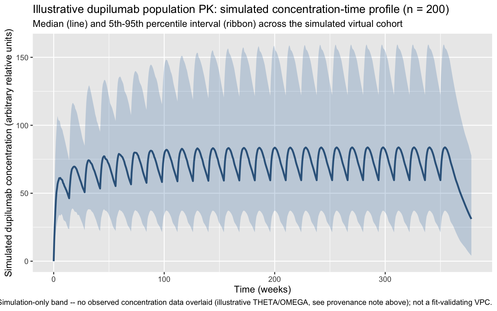
The ribbon widens visibly around each dosing event before narrowing again as the cohort’s absorption-phase concentrations converge toward the next trough, which is the expected between-patient spread from the etaka/etacl/etav OMEGAs layered on top of the deterministic multi-dose accumulation pattern.
Concentration is converted to a time-varying inhibition fraction with a simple Emax model:
\[ r_{il4}(t) = r_{il13}(t) = E_{max} \cdot \frac{C(t)}{EC_{50} + C(t)}\]
Emax <- 0.99 # matches this model's existing antibody-inhibition ceiling (r_il4 = r_il13 = 0.99 above)
EC50 <- 25 # illustrative; arbitrary relative units matching `conc` above; not fit to target-engagement data
pk_cov <- pk_sim |>
dplyr::transmute(id, time,
r_il4 = Emax * conc / (EC50 + conc),
r_il13 = Emax * conc / (EC50 + conc))Emax = 0.99 is chosen to exactly match this model’s existing antibody-inhibition ceiling (the same 0.99 used for the fixed-inhibition Dupilumab arm above), so any difference between the two mechanisms reflects only the time-course, not a different maximum effect. EC50 = 25 (same arbitrary relative units as conc) is an illustrative choice – not fit to any target-engagement dataset – picked from this cohort’s simulated concentration range so that the inhibition fraction visibly ramps up over the first 1-2 weeks of absorption before plateauing near the 0.99 ceiling, which is the qualitative onset-delay behaviour a real PK/PD link is expected to show.
The two mechanisms – this model’s constant fixed inhibition vs. the time-varying PK-driven inhibition just built – are compared directly in Exercise 3 below, once the joint virtual-patient roster gives both mechanisms the same virtual patients’ QSP etas (a fair comparison needs that; simulating each mechanism with its own independent random draw, as an earlier version of this comparison did, only tells you the two cohorts differ, not why).
Assumptions specific to this illustrative PK section:
lka, lcl, lv and their etas) are illustrative mAb-like magnitudes, not fitted to a specific published dupilumab population-PK dataset – only the labeled dosing regimen (600 mg SC load, 300 mg SC q2w) is a citable fact.conc is reported in arbitrary relative units (central/V with an arbitrary V), not mg/L; EC50 = 25 is chosen in those same units purely to produce a visible ~1-2 week onset ramp, not fit to a target-engagement/receptor-occupancy dataset.etaka, etacl, etav) and the 51 QSP-mechanism ETAs are drawn independently – no correlation between the two is assumed or estimated, since no published joint PK/QSP-severity distribution exists for this model. This is a different independence assumption than the intra-QSP one relaxed in “Correlated Vpop sampling” above (that exercise built correlation within the 51 QSP etas; the PK-QSP cross-model correlation considered here remains an open question – see the closing discussion exercise).r_il4 and r_il13 are made time-varying here (dupilumab’s two cytokine targets); the remaining six drug-effect parameters are held at their Dupilumab constant values (0 for all, per drug_params above).Exercise 4. The PK submodel built above (pk_dupi_fn) is a one-compartment model with linear (first-order) elimination: d/dt(central) <- ka*depot - (cl/v)*central. Kovalenko 2016 (cited in the Introduction) reports a structurally different population-PK model for real dupilumab data: a 2-compartment model with parallel linear and Michaelis-Menten (nonlinear, target-mediated) elimination – i.e. an extra peripheral compartment plus an elimination term of the form (cl/v)*central + (vmax*central/v)/(km + central/v), on top of the depot/central structure above. This is a structural fact about the published model; the exact NONMEM parameter estimates (CL, V, Vmax, Km, Q, Vp) were not independently retrievable from the sources available in this environment (the paper is paywalled and both PubMed and the publisher blocked automated access), so this exercise is a structural, not numerical, comparison.
Work through, in order:
A 2-compartment model adds a peripheral (tissue) compartment exchanging drug with central at rate Q. Structurally, what does this add to the shape of a concentration-time curve that a 1-compartment model cannot produce (think about what happens right after the loading dose, before the first maintenance dose)?
Parallel linear + Michaelis-Menten elimination means the fraction of drug cleared by the nonlinear (saturable, target-mediated) pathway is largest when concentration is low relative to Km, and negligible when concentration is high relative to Km. Given the multi-dose accumulation profile from pk_dupi_vpc above, at what point(s) in the dosing interval (peak vs. trough) would this nonlinear pathway matter most, and would you expect it to matter more early in treatment or after several maintenance doses have accumulated?
Sketch the ini()/model() block you would write to add a peripheral compartment and Michaelis-Menten elimination to pk_dupi_fn (you do not need real parameter values – just the structural syntax: what compartments, what rate constants, what functional form for the elimination term).
# Suggested answer (a): a 2-compartment model can show a visible distribution
# phase -- a faster initial decline right after the loading dose as drug
# moves from central into the peripheral compartment, followed by a slower
# terminal decline -- i.e. a bi-exponential (or more complex) decline shape
# instead of this model's single mono-exponential decline between doses.
# Suggested answer (b): the nonlinear (target-mediated) pathway is most
# important at LOW concentrations relative to Km -- i.e. at trough, and
# especially early in treatment before multi-dose accumulation has built up
# a high steady-state trough. As the maintenance doses accumulate and trough
# concentrations rise well above Km, the linear pathway dominates and the
# nonlinear contribution becomes a smaller fraction of total clearance --
# this is the classic target-mediated drug disposition (TMDD) signature.
# Suggested answer (c): structural syntax sketch (illustrative parameter
# values only -- NOT fit to Kovalenko 2016 or any other dataset):
# pk_dupi_2cmt_mm_fn <- function() {
# ini({
# lka <- log(1.73)
# lcl <- log(0.35) # linear-pathway clearance
# lv <- log(1.5)
# lq <- log(0.2) # inter-compartmental clearance (illustrative)
# lvp <- log(1.0) # peripheral volume (illustrative)
# lvmax <- log(0.5) # nonlinear-pathway max elimination rate (illustrative)
# lkm <- log(2.0) # nonlinear-pathway Michaelis constant (illustrative)
# etaka ~ 0.16
# etacl ~ 0.09
# etav ~ 0.04
# })
# model({
# ka <- exp(lka + etaka)
# cl <- exp(lcl + etacl)
# v <- exp(lv + etav)
# q <- exp(lq)
# vp <- exp(lvp)
# vmax <- exp(lvmax)
# km <- exp(lkm)
# d/dt(depot) <- -ka * depot
# d/dt(central) <- ka * depot - (cl / v) * central -
# (vmax * (central / v)) / (km + central / v) -
# (q / v) * central + (q / vp) * peripheral
# d/dt(peripheral) <- (q / v) * central - (q / vp) * peripheral
# conc <- central / v
# })
# }
# pk_dupi_2cmt_mm <- rxode2::rxode2(pk_dupi_2cmt_mm_fn)
# pk_dupi_2cmt_mmThe PK and QSP cohorts simulated above are each internally consistent (id uniquely labels one virtual patient’s PK draw, or one virtual patient’s QSP draw), but the two cohorts were never linked, as the assumptions bullet above makes explicit. Any exercise that wants to ask “what dose-response curve does patient 5 show, given both their own absorption/clearance and their own skin-barrier/cytokine kinetics?” needs a joint roster: one set of virtual patients whose PK parameters and QSP parameters are drawn once, stored, and then reused unchanged across every subsequent simulation, regardless of dosing regimen.
Why re-solving with a shared seed is not enough. A tempting shortcut is to call set.seed(3030) immediately before both the PK and QSP rxSolve() calls, hoping this “links” patient id 5’s PK draw to their QSP draw. This does make the roster reproducible (re-running the script always gives the same pairing), but it does not create any statistical correlation between a patient’s PK parameters and their QSP parameters – each simulation still draws independently from its own OMEGA, consuming a different count of random numbers from the seeded stream (3 PK etas vs. 51 QSP etas). A genuinely correlated joint model would require an estimated shared or dependent random-effect structure, which does not exist for this QSP model. What an explicit-draw approach does give you is a well-defined, inspectable, reproducible roster – the actual prerequisite for the dose-response exercise below.
Overriding calculated parameters directly does not work. It might seem natural to solve once, read off each patient’s realized ka/cl/v (or k1, k2, …) from the output columns, and then supply those values directly as covariates in later simulations. This fails silently: ka, cl, v (and k1, k2, …) are assigned inside model() from THETA + ETA (e.g. ka <- exp(lka + etaka)), so rxode2 recalculates them at solve time regardless of what a same-named data column supplies – a data column only overrides a parameter that the model does not itself compute (this is why the r_il4/r_il13 covariate trick earlier in this vignette works: those are plain ini() THETAs, never recalculated inside model()). The fix is to override the ETAs themselves (etaka, etacl, etav, etalk1, …) as covariates – since those are never recalculated, whatever value is supplied for a given id at every row is exactly what feeds into the model’s own ka <- exp(lka + etaka) calculation, giving deterministic and reproducible per-patient parameters at any dose or time grid.
set.seed(3030)
n_roster <- n_cohort # reuse the existing 200-patient PK cohort size
# Draw each patient's PK-level ETAs from pk_dupi's own OMEGA (no re-typed
# magic numbers -- single source of truth is the fitted model object).
pk_eta_names <- rownames(pk_dupi$omega)
pk_eta_list <- lapply(pk_eta_names, function(nm)
rnorm(n_roster, mean = 0, sd = sqrt(pk_dupi$omega[nm, nm])))
names(pk_eta_list) <- pk_eta_names
pk_eta_df <- as.data.frame(pk_eta_list)
pk_eta_df$id <- seq_len(n_roster)
# Draw the Th2-pathway block (etalk11, etalk13, etalk19) from the correlated
# Sigma_th2 covariance built in "Correlated Vpop sampling" above -- this is
# the only departure from a fully independent 51-parameter QSP draw.
th2_eta_roster <- MASS::mvrnorm(n_roster, mu = c(0, 0, 0), Sigma = Sigma_th2)
colnames(th2_eta_roster) <- th2_names
th2_eta_df <- as.data.frame(th2_eta_roster)
th2_eta_df$id <- seq_len(n_roster)
# Draw the remaining 48 QSP-mechanism ETAs independently from mod()'s own
# OMEGA diagonal, exactly as the model itself assumes.
qsp_omega_diag <- diag(mod()$omega)
qsp_other_names <- setdiff(names(qsp_omega_diag), th2_names)
qsp_eta_list <- lapply(qsp_other_names, function(nm)
rnorm(n_roster, mean = 0, sd = sqrt(qsp_omega_diag[[nm]])))
names(qsp_eta_list) <- qsp_other_names
qsp_eta_df <- as.data.frame(qsp_eta_list)
qsp_eta_df$id <- seq_len(n_roster)
vpop_roster <- pk_eta_df |>
dplyr::left_join(th2_eta_df, by = "id") |>
dplyr::left_join(qsp_eta_df, by = "id") |>
dplyr::left_join(covset,by="id")|>
dplyr::relocate(id)
dim(vpop_roster)[1] 200 61vpop_roster has one row per virtual patient and 60 ETA columns (3 PK + 51 QSP, of which 3 – the Th2 block – are drawn jointly/correlated and 48 remain independent). Because these are the raw ETAs (not the derived ka/cl/v/k1/…), the same roster can be merged into any future events dataframe by id – for any dosing regimen or time grid – and will always reconstruct the identical per-patient parameters. Two checks confirm the intended structure: no correlation between PK and QSP etas (as expected, since none is assumed), and the intended correlation within the Th2 block (as built above):
cat("cor(etacl, etalk1) [PK vs. unrelated QSP eta, expect ~0]: ", cor(vpop_roster$eta.ke, vpop_roster$etalk1), "\n")cor(etacl, etalk1) [PK vs. unrelated QSP eta, expect ~0]: -0.09004055 cat("cor(etalk11, etalk13) [Th2 block, expect ~", rho, "]: ", cor(vpop_roster$etalk11, vpop_roster$etalk13), "\n")cor(etalk11, etalk13) [Th2 block, expect ~ 0.6 ]: 0.5592998 cat("cor(etalk11, etalk19) [Th2 block, expect ~", rho, "]: ", cor(vpop_roster$etalk11, vpop_roster$etalk19), "\n")cor(etalk11, etalk19) [Th2 block, expect ~ 0.6 ]: 0.5584214 df_check <- rbind(
data.frame(x = vpop_roster$eta.ke, y = vpop_roster$etalk1,
panel = "PK etacl vs. QSP etalk1 (independent)"),
data.frame(x = vpop_roster$etalk11, y = vpop_roster$etalk13,
panel = "QSP etalk11 vs. etalk13 (correlated Th2 block)")
)
ggplot(df_check, aes(x = x, y = y)) +
geom_point(alpha = 0.4) +
facet_wrap(~ panel, scales = "free") +
labs(x = NULL, y = NULL,
title = "vpop_roster structure check: independent by default, correlated where explicitly built")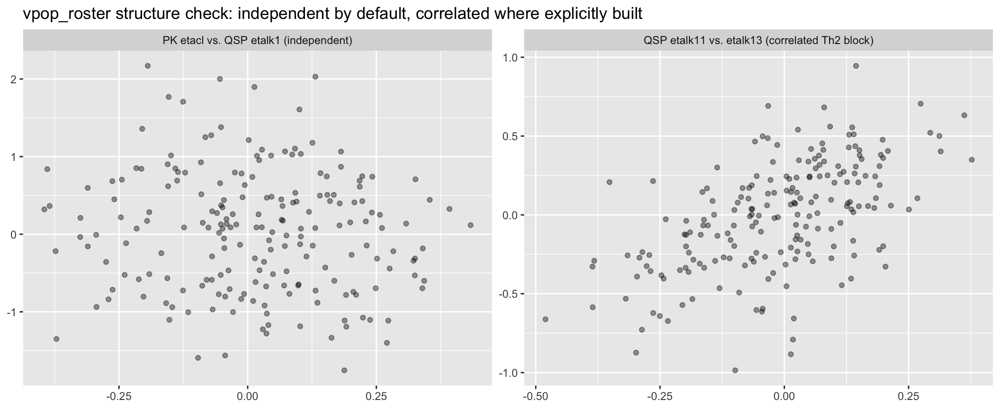
This vpop_roster is the joint sampling infrastructure used in the dose-response exercise below.
Miyano 2022, as published, has no dose axis at all – each drug arm is a fixed inhibition fraction, not a function of mg administered. This section builds a genuine dose-response curve three ways, using the vpop_roster joint sampling from above so that each virtual patient’s identity (both PK and QSP parameters) is held fixed across every dose level.
As a baseline, the closest thing to a “dose-response” the published model supports is sweeping the inhibition fraction itself as a synthetic dose proxy (there being no real dose to sweep):
inhibition_levels <- c(0, 0.25, 0.5, 0.75, 0.99)
dose_response_a <- purrr::map_dfr(inhibition_levels, function(r_val) {
ev <- rxode2::et(seq(0, 24, by = 1)) |> rxode2::et(id = seq_len(n_per_arm))
ev$cmt <- "barrier"
p <- c(r_placebo = 1, r_il4 = r_val, r_il13 = r_val, r_il17 = 0, r_il22 = 0,
r_il31 = 0, r_tslp = 0, r_ox40l = 0, c_rifng = 0, e_a2 = 1)
sim <- rxode2::rxSolve(mod_stoch, events = ev, nSub = n_per_arm, params = p,
inits = baseline_typ_named) |> as.data.frame()
sim$inhibition <- r_val
sim
})
baseline_a <- dose_response_a |> dplyr::filter(time == 0) |>
dplyr::select(inhibition, id, EASI_baseline = EASI)
dose_response_a <- dose_response_a |>
dplyr::left_join(baseline_a, by = c("inhibition", "id")) |>
dplyr::mutate(pct_improved = 100 * (EASI_baseline - EASI) / EASI_baseline)
easi75_a <- dose_response_a |>
dplyr::filter(time == 24) |>
dplyr::group_by(inhibition) |>
dplyr::summarise(EASI75 = 100 * mean(pct_improved > 75, na.rm = TRUE), .groups = "drop")
ggplot(easi75_a, aes(x = inhibition, y = EASI75)) +
geom_point(size = 3) + geom_line() +
labs(x = "Fixed cytokine-inhibition fraction (r_il4 = r_il13; a synthetic \"dose\" proxy)",
y = "Week-24 EASI-75 responder rate (%)",
title = "(a) Miyano-style rudimentary dose-response",
caption = paste0("n = ", n_per_arm, " per level; no real dose or PK axis exists in the published model."))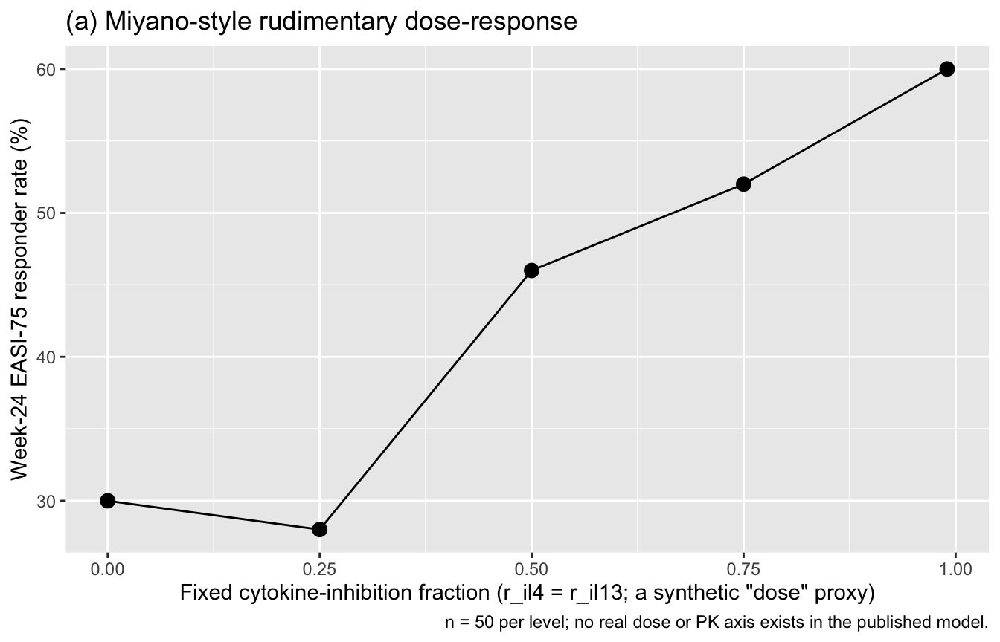
This curve answers a different question than a true dose-response: it shows how EASI-75 depends on an assumed inhibition fraction, not on how much drug (mg) was administered or how that translates to target engagement over time.
Using vpop_roster, the same 200 virtual patients are dosed at five maintenance-dose levels (600 mg load + q2w maintenance, the labeled regimen’s structure, scaled to different maintenance amounts): each patient’s own fixed PK ETAs generate a real concentration-time profile, the Emax link converts that profile to a time-varying r_il4/r_il13, and each patient’s own fixed QSP ETAs generate their EASI trajectory.
Each point on this curve is a responder-rate estimate from one finite virtual cohort (n_roster = 200 patients), so it carries sampling uncertainty just like an observed rate from a real trial would. Because the per-patient outcomes are already fully simulated below, a nonparametric (case-resampling) bootstrap is the cheapest way to quantify that uncertainty: resample the n_roster patients’ already-simulated pct_improved outcomes with replacement, recompute the EASI-75 proportion, repeat many times, and take the 2.5th/97.5th percentiles of the resulting distribution. This needs no new ODE solves – only resampling numbers already in hand – unlike a parametric bootstrap that would redraw fresh ETAs and re-run rxSolve() for every replicate.
dose_levels <- c(100, 200, 300, 450, 600) # maintenance SC dose (mg), q2w; loading = 2x maintenance (same structure as the labeled regimen above)
sample_times <- seq(0, 14 * (n_doses_maintenance + 1) + 14, by = .5)
simulate_dose <- function(maintenance_dose) {
# PK: same t_grid/cohort as above, but ka/cl/v are pinned per patient via
# the etaka/etacl/etav covariates from vpop_roster (see technique note above).
ev_pk_dose <- rxode2::et(amt = 2 * maintenance_dose, time = 0, cmt = "depot", id = seq_len(n_roster)) |>
rxode2::et(amt = maintenance_dose, time = 2, ii = 2, addl = 11, cmt = "depot") |>
rxode2::et(t_grid)
ev_pk_dose <- as.data.frame(ev_pk_dose) |>
dplyr::left_join(vpop_roster |> dplyr::select(id, eta.ke, eta.v2, eta.vmax, eta.ka, eta.fsc,WT,ALB,CLCRN,ADA), by = "id")
pk_dose_sim <- rxode2::rxSolve(pk_dupi, events = ev_pk_dose) |>
mutate(conc=CP) |>
as.data.frame()
pk_dose_cov <- pk_dose_sim |>
dplyr::transmute(id, time,
r_il4 = Emax * conc / (EC50 + conc),
r_il13 = Emax * conc / (EC50 + conc))
# QSP: same t_grid/cohort, QSP ETAs pinned per patient via vpop_roster,
# PK-derived time-varying r_il4/r_il13 covariate merged in alongside them.
ev_qsp_dose <- rxode2::et(t_grid) |> rxode2::et(id = seq_len(n_roster))
ev_qsp_dose$cmt <- "barrier"
ev_qsp_dose <- as.data.frame(ev_qsp_dose) |>
dplyr::left_join(pk_dose_cov, by = c("id", "time")) |>
dplyr::left_join(vpop_roster |> dplyr::select(id, dplyr::all_of(names(qsp_omega_diag))), by = "id")
p_dose_other <- c(r_placebo = 1, r_il17 = 0, r_il22 = 0, r_il31 = 0,
r_tslp = 0, r_ox40l = 0, c_rifng = 0, e_a2 = 1)
qsp_dose_sim <- rxode2::rxSolve(mod_stoch, events = ev_qsp_dose,
params = p_dose_other,
inits = baseline_typ_named) |> as.data.frame()
qsp_dose_sim$dose <- maintenance_dose
qsp_dose_sim
}
dose_response_b <- purrr::map_dfr(dose_levels, simulate_dose)
baseline_b <- dose_response_b |> dplyr::filter(time == 0) |>
dplyr::select(dose, id, EASI_baseline = EASI)
dose_response_b <- dose_response_b |>
dplyr::left_join(baseline_b, by = c("dose", "id")) |>
dplyr::mutate(pct_improved = 100 * (EASI_baseline - EASI) / EASI_baseline)
# Nonparametric (case-resampling) bootstrap 95% CI on the week-24 EASI-75
# responder rate at each dose: resample the n_roster patients' already-
# simulated pct_improved outcomes with replacement, recompute the responder
# proportion, repeat n_boot times, and take percentiles. This captures
# sampling uncertainty from having a finite virtual cohort; it does NOT
# capture parameter uncertainty in the model's own THETA/OMEGA estimates
# (see the interpretation note below).
set.seed(9090)
n_boot <- 500L
boot_easi75 <- function(pct_improved, n_boot) {
n <- length(pct_improved)
point_est <- 100 * mean(pct_improved > 75, na.rm = TRUE)
boot_props <- replicate(n_boot, {
100 * mean(sample(pct_improved, n, replace = TRUE) > 75, na.rm = TRUE)
})
tibble::tibble(EASI75 = point_est,
lower = unname(quantile(boot_props, 0.025)),
upper = unname(quantile(boot_props, 0.975)))
}
easi75_b <- dose_response_b |>
dplyr::filter(time == 24) |>
dplyr::group_by(dose) |>
dplyr::group_modify(~ boot_easi75(.x$pct_improved, n_boot)) |>
dplyr::ungroup()
ggplot(easi75_b, aes(x = dose, y = EASI75)) +
geom_ribbon(aes(ymin = lower, ymax = upper), alpha = 0.15, fill = "steelblue") +
geom_point(size = 3) + geom_line() +
labs(x = "Maintenance dose (mg SC, q2w; loading = 2x)",
y = "Week-24 EASI-75 responder rate (%)",
title = "(b) Integrated PopPK + QSP dose-response, with bootstrap 95% CI",
caption = paste0("Point = observed responder rate across n = ", n_roster,
" virtual patients (vpop_roster, reused across every dose level); ",
"ribbon = nonparametric bootstrap 95% CI (", n_boot, " resamples)."))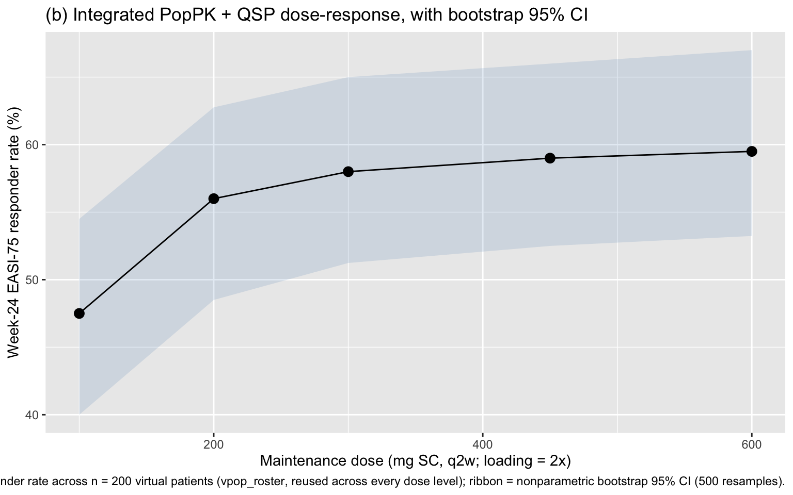
Unlike (a), this curve is a genuine dose-response: the x-axis is an actual administered mg dose, and the EASI-75 rate at each dose reflects the same 200 virtual patients’ own absorption/clearance and skin/cytokine kinetics propagating through a real concentration profile and Emax link – lower doses show a visibly lower plateau concentration (per the pk_dupi_fn PK submodel) and correspondingly lower EASI-75, while doses at or above the labeled 300 mg maintenance level approach the same saturating response seen in the fixed-inhibition mechanism above.
Interpreting the ribbon: the bootstrap band only reflects finite-cohort sampling uncertainty in the responder-rate estimate – it answers “how much would this curve wiggle if I re-drew a different random sample of
n_rosterpatients from the same simulated distribution?” It does not propagate uncertainty in the underlying model itself (e.g. the paper’s fitted THETA/OMEGA values, or the illustrative PK submodel’s parameters). Quantifying that structural/parameter uncertainty would require a parametric bootstrap or a full uncertainty analysis on the original model fits, which is out of scope for this tutorial.
dose_response_b already contains the PK-driven mechanism’s result at the labeled 300 mg maintenance dose (the dose == 300 rows). Build the matching fixed-inhibition comparator – the same vpop_roster virtual patients (same QSP etas), same t_grid, but with r_il4 = r_il13 = 0.99 held constant for the whole 24 weeks instead of the PK-driven time-varying value – and compare the two EASI-75 curves. Because both mechanisms now reuse the same vpop_roster QSP etas, any difference you see is attributable only to the drug-effect mechanism, not to different patients.
# Suggested answer: fixed-inhibition comparator using the SAME vpop_roster
# QSP etas as dose_response_b (dose == 300), so the two mechanisms are
# compared on identical virtual patients.
ev_fixed_matched <- rxode2::et(t_grid) |> rxode2::et(id = seq_len(n_roster))
ev_fixed_matched$cmt <- "barrier"
ev_fixed_matched <- as.data.frame(ev_fixed_matched) |>
dplyr::left_join(vpop_roster |> dplyr::select(id, dplyr::all_of(names(qsp_omega_diag))), by = "id")
p_fixed_matched <- c(r_placebo = 1, r_il4 = 0.99, r_il13 = 0.99, r_il17 = 0, r_il22 = 0,
r_il31 = 0, r_tslp = 0, r_ox40l = 0, c_rifng = 0, e_a2 = 1)
fixed_matched_sim <- rxode2::rxSolve(mod_stoch, events = ev_fixed_matched,
params = p_fixed_matched,
inits = baseline_typ_named) |> as.data.frame()
easi75_from_matched <- function(sim, label) {
baseline_easi <- sim |> dplyr::filter(time == 0) |> dplyr::select(id, EASI_baseline0 = EASI)
sim |>
dplyr::select(-dplyr::any_of("EASI_baseline"), -dplyr::any_of("pct_improved")) |>
dplyr::left_join(baseline_easi, by = "id") |>
dplyr::mutate(pct_improved = 100 * (EASI_baseline0 - EASI) / EASI_baseline0) |>
dplyr::group_by(time) |>
dplyr::summarise(EASI75 = 100 * mean(pct_improved > 75, na.rm = TRUE), .groups = "drop") |>
dplyr::mutate(mechanism = label)
}
easi75_matched_compare <- dplyr::bind_rows(
dose_response_b |> dplyr::filter(dose == 300) |>
easi75_from_matched("PK-driven (300 mg q2w)"),
easi75_from_matched(fixed_matched_sim, "Fixed inhibition (r_il4 = r_il13 = 0.99)")
)
ggplot(easi75_matched_compare, aes(x = time, y = EASI75, colour = mechanism)) +
geom_line(linewidth = 0.9) +
labs(x = "Time on treatment (weeks)", y = "EASI-75 responder rate (%)",
colour = NULL,
title = "Fixed inhibition vs. PK-driven inhibition, same virtual patients, matched 300 mg dose",
caption = "Both mechanisms reuse vpop_roster's QSP etas -- only the drug-effect mechanism differs.")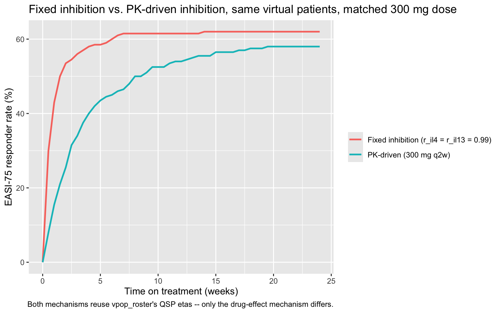
get_val_m <- function(df, wk, mech) round(df$EASI75[df$time == wk & df$mechanism == mech], 0)
cat("Week 2 -- PK-driven:", get_val_m(easi75_matched_compare, 2, "PK-driven (300 mg q2w)"),
"% Fixed:", get_val_m(easi75_matched_compare, 2, "Fixed inhibition (r_il4 = r_il13 = 0.99)"), "%\n")Week 2 -- PK-driven: 26 % Fixed: 54 %cat("Week 24 -- PK-driven:", get_val_m(easi75_matched_compare, 24, "PK-driven (300 mg q2w)"),
"% Fixed:", get_val_m(easi75_matched_compare, 24, "Fixed inhibition (r_il4 = r_il13 = 0.99)"), "%\n")Week 24 -- PK-driven: 58 % Fixed: 62 %The PK-driven mechanism lags behind the fixed-inhibition mechanism early in treatment (the inhibition fraction is still ramping up through the SC absorption phase, while the fixed mechanism is unrealistically already at full 0.99 blockade from t = 0), and does not fully converge to the fixed mechanism’s ceiling by week 24 (the accumulated multi-dose concentration plateaus a little below full saturation of the Emax relationship). The qualitative lesson generalizes beyond dupilumab: treating drug effect as an instantaneous constant systematically overstates early-treatment response relative to a model that links a real absorption/distribution/elimination profile to target engagement.
The vpop_roster approach above links PopPK and QSP sampling by drawing and pinning each patient’s ETAs once, then re-simulating both models independently at every dose level. This is one of several possible designs. Consider and discuss:
vpop_roster?Emax, EC50) is illustrative and shared with the fixed-inhibition ceiling above. If you had real target-engagement (receptor occupancy) data for dupilumab, how would you re-parameterize this link, and what would change in the resulting dose-response shape?No code is provided for this part – it is meant to be worked through as a discussion or a follow-on modeling exercise.